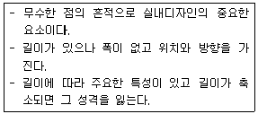
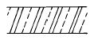
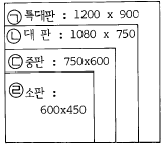

실내건축기능사 (2002-07-21 기출문제)
1과목: 실내디자인
1. 사람의 신체를 기준으로 하여 측정되는 척도를 나타내는 용어명은?
- 그리드
- 모듈
- 비례
- 휴먼스케일
(정답률: 93%)

2. 상업공간의 실내계획에 있어 구매심리 5단계 중 관계가 적은 것은?
- 주의(Attention)
- 권유(Persuasion)
- 욕망(Desire)
- 행위(Action)
(정답률: 60%)
3. 천장에서 와이어나 파이프로 매어단 조명방식으로, 조명기구 자체가 장식적인 역할을 하는 조명방식은?
- 펜던트
- 다운라이트
- 스포트라이트
- 브라켓
(정답률: 93%)
4. 창의 기능과 특징에 대한 설명으로 틀린 것은?
- 채광, 통풍, 조망, 환기의 역할을 한다.
- 실내공간과 실외공간을 시각적으로 연결한다.
- 창은 실내의 냉· 난방과는 관련성이 없다.
- 창은 실내의 조명계획과 밀접한 관련성이 있다.
(정답률: 90%)
5. 다음 중 개방형 공간구성의 특징에 해당되는 것은?
- 공간사용의 융통성과 극대화
- 프라이버시 보장과 에너지 절약
- 조직화를 통한 시각적 애매모호함 제거
- 복수의 구성요소가 독립적 공간을 갖는 것
(정답률: 83%)
6. 디자인요소의 반복이나 유사성, 동질성에서 얻어지는 효과는?
- 통일성
- 변화
- 대비
- 균형
(정답률: 65%)
7. 주거공간의 동선에 관한 설명으로 옳지 않은 것은?
- 동선은 짧을수록 에너지 소모가 적다.
- 주부동선은 길수록 좋다.
- 동선을 줄이기 위해 다른 공간의 독립성을 저해해서는 안된다.
- 거실이 주거의 중앙에 위치하면 동선을 줄일 수 있다.
(정답률: 94%)
8. 조용하고 엄숙하며 공식적인 분위기에 어울리는 디자인 요소는?
- 대칭 균형
- 방사 균형
- 환형 균형
- 비대칭 균형
(정답률: 89%)
9. 사람들의 생활이 이루어지고 공간에 부수되는 벽, 칸막이, 가구류, 기물류 들이 놓이게 되는 곳은?
- 바닥
- 벽
- 천장
- 개구부
(정답률: 86%)
10. 주택보다는 대형건물의 현관문으로 많이 사용되어 많은 사람들이 출입하기에 편리한 문은?
- 자재문
- 미닫이문
- 여닫이문
- 접이문
(정답률: 54%)
11. 다음 중 주거공간에 해당하는 건축물은?
- 오피스텔
- 과학관
- 소매점
- 기숙사
(정답률: 51%)
12. 소규모 주택에서 많이 사용하는 방법으로 거실내에 부엌과 식사실을 설치한 것은?
- D
- DK
- LD
- LDK
(정답률: 87%)
13. 다음 보기는 형의 구성요소 중 무엇에 대한 정의인가?

- 점
- 면
- 입체
- 선
(정답률: 90%)
14. 다음 중 환경 디자인의 목적과 관계가 적은 것은?
- 기업의 판매 전략을 촉진시키기 위한 의사전달 활동이다.
- 자연 환경의 보존, 도시 환경의 개발, 옛 건물의 재 순환과 조화 등이 실질적인 과제이다.
- 건축 디자인, 옥외 디자인, 실내 디자인 기타 각 디자인 분야를 하나로 묶는 디자인 개념이다.
- 사람이 살고 있는 공간을 더욱 아름답고 생기 있게 만드는 활동이다.
(정답률: 82%)
15. 공간의 영역을 구분하는 방법으로 인간의 활동과 활동시간, 공간사용자의 특성 등으로 동질적인 공간을 구성하는 방법을 무엇이라고 하는가?
- 블록 플래닝(block planning)
- 에스키스(esquisse)
- 목업 디자인(Mock up design)
- 모델링(modeling)
(정답률: 49%)
16. 주택의 실내 쾌적상태로 적당한 것은?
- 실온 16℃, 습도 30%
- 실온 20℃, 습도 70 - 80%
- 실온 23℃, 습도 50 - 60%
- 실온 26℃, 습도 80%
(정답률: 73%)
17. 다음 중 인체에서 열의 손실이 이루어지는 요인으로 가장 거리가 먼 것은?
- 인체 주변공기의 대류
- 인체표면의 열복사
- 인체 내 음식물의 산화작용
- 호흡, 땀 등의 수분 증발
(정답률: 88%)
18. 실내 공기의 오염도 측정시 기준 값으로 쓰이는 것은?
- 먼지량
- 이산화탄소량
- 아황산가스
- 일산화탄소량
(정답률: 85%)
19. 균일한 조도와 눈에 대한 피로가 적으며 차분한 분위기를 만들 수 있는 가장 적합한 조명방식은?
- 직접 조명
- 국부 조명
- 간접 조명
- 전반확산 조명
(정답률: 80%)
20. 실내 잔향계획 중 옳지 않은 것은?
- 음악 연주인 경우는 저음역이 긴 편이 좋다.
- 명료도가 요구되는 강연은 저음역이 짧은 것이 좋다.
- 저음역은 판 재료에 의해서 흡음 처리한다.
- 무대쪽은 흡음성 재료를 사용한다.
(정답률: 59%)
2과목: 실내환경
21. 합판의 특성으로 옳지 않은 것은?
- 방향에 따른 강도의 차가 크다.
- 목재의 결점을 제거할 수 있다.
- 아름다운 무늬가 좋은 판을 얻을 수 있다.
- 곡면판을 만들 수 있다.
(정답률: 57%)
22. 다음 중 열경화성 수지는?
- 염화비닐수지
- 초산비닐수지
- 아크릴수지
- 페놀수지
(정답률: 49%)
23. 벽돌 반토막의 크기로 옳은 것은?(단, 단위 mm)
- 190× 90× 57
- 190× 45× 57
- 95× 90× 57
- 95× 45× 57
(정답률: 53%)
24. 합성수지계 접착제가 아닌 것은?
- 요소수지
- 페놀수지
- 멜라민수지
- 카세인수지
(정답률: 59%)
25. 다음 중 콘크리트 제품인 것은?
- 후형 슬레이트
- 석면 플렉시블 평판 (asbestos cement flexible board)
- 흄관(hume pipe)
- 두리졸(durisol)
(정답률: 30%)
26. 2장 또는 3장의 판유리를 일정한 간격으로 띄어 금속테로 기밀하게 테두리를 하여 방음, 단열성이 크고 결로방지용으로 우수한 유리제품은?
- 망입유리
- 색유리
- 복층유리
- 자외선 흡수유리
(정답률: 85%)
27. 목재의 분류 중 침엽수재가 아닌 것은?
- 가문비나무
- 낙엽송
- 벗나무
- 잣나무
(정답률: 39%)
28. 합성수지를 설명한 것 중 옳지 않은 것은?
- 가공성이 용이하고 색채가 미려하다.
- 내마모성 및 표면강도가 강하다.
- 열팽창계수가 온도의 변화에 따라 다르다.
- 최근에는 건축물 외장재로도 많이 쓰인다.
(정답률: 28%)
29. 동일 시멘트를 사용할 때, 콘크리트의 응결이 가장 늦어지는 경우는?
- 기상조건이 고온, 저습일 경우
- 시멘트의 슬럼프가 작을 경우
- 물이나 골재에 염분이 함유된 경우
- 물이나 골재에 당류, 부식토가 함유된 경우
(정답률: 38%)
30. 유리를 재가열하여 미세한 결정들의 집합체로 변형시킨 것으로 부드러운 질감과 강도,경도,내후성이 우수하여 건축물의 내외벽 바닥 등의 마감재로 쓰이는 것은?
- 유리블록
- 폼글래스
- 유리섬유
- 결정화유리
(정답률: 40%)
3과목: 실내건축재료
31. 강을 800∼1000℃로 가열한 다음 공기 중에서 냉각시키는 방법은?
- 뜨임
- 풀림
- 불림
- 담금질
(정답률: 41%)
32. 기와 대신 지붕재료로 사용할 수 있는 석재로 적당한 것은?
- 사암
- 응회암
- 점판암
- 석회암
(정답률: 70%)
33. 최근 주택의 지붕재에 많이 사용하며 심재로 목재의 섬유질이나 유리섬유를 사용하는 것은?
- 아스팔트 펠트
- 아스팔트 싱글
- 아스팔트 타일
- 아스팔트 루핑
(정답률: 42%)
34. 합성수지의 신 재료 중 톱라이트, 온수 풀의 옥상, 아케이드 등에 유리 대용으로 많이 사용되는 것은?
- 폴리카보네이트
- 선상폴리아미드 수지
- 폴리판 수지
- 폴리에틸렌 수지
(정답률: 35%)
35. 활석 분말의 용도로 적당하지 않은 것은?
- 페인트의 혼화제
- 아스팔트 루핑의 표면 정활제
- 유리연마제
- 방수제
(정답률: 46%)
36. 목재 집성재에 대한 설명 중 잘못된 것은?
- 두께 15∼50mm의 단판을 제재하여 섬유방향을 거의 평형이 되게 여러장 접착한 것이다.
- 판을 붙이는 것은 3,5,7장 등과 같이 정확하게 홀수로 붙여야 한다.
- 합판과 같이 얇은 판이 아니라 보나 기둥에 사용할 수 있는 단면을 가진다.
- 아치와 같은 굽은 용재를 만들 수 있다.
(정답률: 42%)
37. 콘크리트에서 강도가 가장 큰 것은?
- 인장강도
- 휨강도
- 전단강도
- 압축강도
(정답률: 80%)
38. 다음 중 목재의 장점에 속하지 않는 것은?
- 중량에 비하여 강도가 크다.
- 가공 및 운반이 쉽다.
- 외관이 아름답고 감촉이 좋다.
- 함수율에 따라 수축 팽창이 크다.
(정답률: 50%)
39. 석재의 조직에 대한 설명으로 옳지 않은 것은?
- 조암광물 중 석영은 무색이고 견고하다.
- 안산암은 눈으로 볼 수 있는 현정질로 석재 표면이 구성되어 있다.
- 암석 중에 갈라진 틈을 절리라 하며, 화성암에서 볼 수 있다.
- 작게 쪼개어 지기 쉬운 면이 있는데 이것을 석목이라 한다.
(정답률: 30%)
40. 다음 중 PS 콘크리트에 주로 쓰이는 철선은?
- PC 강선
- 이형철근
- 강봉
- 경량 형강
(정답률: 38%)
41. 다음 그림의 재료 구조표시는 어느 것을 나타내는가?

- 석재
- 모조석
- 벽돌
- 목재
(정답률: 31%)
42. 제도판의 크기는 특대, 대, 중, 소판으로 분류한다. 아래 그림에서 크기가 잘못된 것은?

- ㉠
- ㉡
- ㉢
- ㉣
(정답률: 42%)
43. 울거미를 짜고 그 중간에 판자를 끼워 만든 문은?
- 널문
- 양판문
- 플러시문
- 비늘살문
(정답률: 38%)
44. 서로 직각으로 교차되는 벽을 무엇이라 하는가?
- 내력벽
- 대린벽
- 부축벽
- 칸막이벽
(정답률: 43%)
45. 강재 접합법 중 소음이 나지 않고 해체하기 쉬우며 마찰 저항에 의한 접합법은?
- 리벳접합
- 고력볼트접합
- 용접접합
- 핀접합
(정답률: 41%)
46. 계단참은 계단 높이 몇 m 이내마다 설치하는가?
- 1m
- 2m
- 3m
- 5m
(정답률: 43%)
47. 배치도 표현에 관한 설명 중 틀린 것은?
- 1층 평면도를 기준으로 그린다.
- 축척은 대부분 1/200 - 1/600의 범위에서 그린다.
- 각실과의 연관 관계를 표시한다.
- 대지에 접한 도로의 위치와 나비, 출입구의 위치 등을 표시한다.
(정답률: 35%)
48. 철근콘크리트 구조에 대한 설명으로 옳은 것은?
- 철근은 압축력을, 콘크리트는 인장력을 부담한다.
- 잔골재 및 굵은골재의 공극율은 60∼70% 이다.
- 이형철근이 원형철근보다 일반적으로 부착응력이 우수하다.
- 무근 콘크리트의 경우에는 바닷물이 오히려 강도상 효과적이다.
(정답률: 55%)
49. 건축물의 상부와 하부를 구획하는 수평 구조체는?
- 벽체
- 바닥
- 지붕
- 기둥
(정답률: 68%)
50. 아래 구조물 중에서 횡력에 가장 약한 구조는?
- 목구조
- 벽돌구조
- 철골구조
- 철근콘크리트구조
(정답률: 61%)
4과목: 건축일반
51. 바닥, 경사로 경사 표시 방법으로 가장 적당한 것은?
- 밑변에 대한 높이의 비로 표시하고 분모를 10으로 한 분수로 표시
- 밑변에 대한 높이의 비로 표시하고 분자를 10으로 한 분수로 표시
- 밑변에 대한 높이의 비로 표시하고 분자를 1로 한 분수로 표시
- 밑변에 대한 높이의 비로 표시하고 분모를 1로 한 분수로 표시
(정답률: 38%)
52. 철근 콘크리트 구조에서 이음새에 대한 설명으로 적합하지 못한 것은?
- 신축 이음새가 필요한 이유는 온도 변화 때문이다.
- 기존건물과 증축 건물의 접합부에 신축 줄눈을 설치한다.
- 부동침하, 적재하중의 변화 등으로 콘크리트에 생기는 균열을 방지하기 위하여 설치한다.
- 줄눈의 외부면은 철제, 알루미늄제 등으로 양쪽 구조체에 고정시킨다.
(정답률: 34%)
53. 조립식 구조에 대한 설명 중 적당하지 못한 것은?
- 건축의 생산성을 향상시키기 위한 방책으로 조립식 건축이 성행되었다.
- 규격화된 각종 건축부재를 공장에서 대량 생산할 수 있다.
- 현장 작업의 공정을 줄여야 경비 절감을 할 수 있다.
- 각 부재의 접합부를 일체화하기 쉽다.
(정답률: 43%)
54. 실내벽 하부를 보호하고 장식을 겸하여 높이 1∼1.2m정도로 널을 댄 벽은?
- 징두리 판벽
- 걸레받이
- 코펜하겐 리브
- 바름벽
(정답률: 35%)
55. 도면의 종류 중 용도에 따른 도면이 아닌 것은?
- 계획 설계도
- 기본 설계도
- 시방서
- 배치도
(정답률: 15%)
56. 습식구조에 관한 설명으로 옳지 않은 것은?
- 자유로운 형태를 얻을 수 있다.
- 공사기간이 짧다.
- 겨울공사는 곤란하다.
- 긴밀한 구조체를 얻을 수 있다.
(정답률: 52%)
57. 다음 구조 중 기둥이 없는 가장 넓은 공간을 얻을 수 있는 구조는?
- 내력벽식구조
- 가구식구조
- 철골구조
- 트러스구조
(정답률: 35%)
58. 콘크리트의 온도에 의한 용적 변화를 설명한 것 중 틀린것은?
- 온도가 올라가면 팽창하고, 온도가 내려가면 수축 한다.
- 온도에 의한 수축이 건조 수축과 동시에 일어나면 심한 균열을 유발한다.
- 철근과 콘크리트가 상온에서 열팽창 계수가 크게 다른 것은 중요한 장점이다.
- 온도에 의한 체적 변화는 골재의 암질에 지배되는 경우가 많다.
(정답률: 55%)
59. 선의 간격에 변화를 주어 면과 입체를 한정시키는 방법인 것은?
- 단선에 의한 묘사
- 여러 선에 의한 묘사
- 단선과 명암에 의한 묘사
- 명암처리 만으로 묘사
(정답률: 39%)
60. 조적조 주택을 건축하려 한다. 하루 벽돌을 쌓을 수 있는 높이의 표준은?
- 0.8m
- 1m
- 1.2m
- 1.5m
(정답률: 53%)